Plotting functions¶
EXAMPLES:
sage: x, y = var('x y')
sage: W = plot3d(sin(pi*((x)^2 + (y)^2))/2, (x, -1, 1), (y, -1, 1),
....: frame=False, color='purple', opacity=0.8)
sage: S = sphere((0, 0, 0), size=0.3, color='red', aspect_ratio=[1,1,1])
sage: show(W + S, figsize=8)
>>> from sage.all import *
>>> x, y = var('x y')
>>> W = plot3d(sin(pi*((x)**Integer(2) + (y)**Integer(2)))/Integer(2), (x, -Integer(1), Integer(1)), (y, -Integer(1), Integer(1)),
... frame=False, color='purple', opacity=RealNumber('0.8'))
>>> S = sphere((Integer(0), Integer(0), Integer(0)), size=RealNumber('0.3'), color='red', aspect_ratio=[Integer(1),Integer(1),Integer(1)])
>>> show(W + S, figsize=Integer(8))
sage: def f(x, y):
....: return math.sin(y^2 + x^2)/math.sqrt(x^2 + y^2 + 0.0001)
sage: P = plot3d(f, (-3, 3),(-3, 3), adaptive=True,
....: color=rainbow(60, 'rgbtuple'), max_bend=.1, max_depth=15)
sage: P.show()
>>> from sage.all import *
>>> def f(x, y):
... return math.sin(y**Integer(2) + x**Integer(2))/math.sqrt(x**Integer(2) + y**Integer(2) + RealNumber('0.0001'))
>>> P = plot3d(f, (-Integer(3), Integer(3)),(-Integer(3), Integer(3)), adaptive=True,
... color=rainbow(Integer(60), 'rgbtuple'), max_bend=RealNumber('.1'), max_depth=Integer(15))
>>> P.show()
sage: def f(x, y):
....: return math.exp(x/5)*math.sin(y)
....:
sage: P = plot3d(f, (-5, 5), (-5, 5), adaptive=True, color=['red', 'yellow'])
sage: from sage.plot.plot3d.plot3d import axes
sage: S = P + axes(6, color='black')
sage: S.show()
>>> from sage.all import *
>>> def f(x, y):
... return math.exp(x/Integer(5))*math.sin(y)
....:
>>> P = plot3d(f, (-Integer(5), Integer(5)), (-Integer(5), Integer(5)), adaptive=True, color=['red', 'yellow'])
>>> from sage.plot.plot3d.plot3d import axes
>>> S = P + axes(Integer(6), color='black')
>>> S.show()
Here is an example using a colormap and a color function c:
sage: x, y = var('x y')
sage: cm = colormaps.hsv
sage: def c(x, y): return float((x + y + x*y)/15) % 1
sage: plot3d(x*x + y*y, (x, -4, 4), (y, -4, 4), color=(c, cm))
Graphics3d Object
>>> from sage.all import *
>>> x, y = var('x y')
>>> cm = colormaps.hsv
>>> def c(x, y): return float((x + y + x*y)/Integer(15)) % Integer(1)
>>> plot3d(x*x + y*y, (x, -Integer(4), Integer(4)), (y, -Integer(4), Integer(4)), color=(c, cm))
Graphics3d Object
Beware that the color function must take values between 0 and 1.
We plot “cape man”:
sage: S = sphere(size=.5, color='yellow')
>>> from sage.all import *
>>> S = sphere(size=RealNumber('.5'), color='yellow')
sage: from sage.plot.plot3d.shapes import Cone
sage: S += Cone(.5, .5, color='red').translate(0,0,.3)
>>> from sage.all import *
>>> from sage.plot.plot3d.shapes import Cone
>>> S += Cone(RealNumber('.5'), RealNumber('.5'), color='red').translate(Integer(0),Integer(0),RealNumber('.3'))
sage: S += sphere((.45, -.1, .15), size=.1, color='white')
sage: S += sphere((.51,-.1,.17), size=.05, color='black')
sage: S += sphere((.45, .1, .15), size=.1, color='white')
sage: S += sphere((.51, .1,.17), size=.05, color='black')
sage: S += sphere((.5, 0, -.2), size=.1, color='yellow')
sage: def f(x, y): return math.exp(x/5)*math.cos(y)
sage: P = plot3d(f, (-5, 5), (-5, 5), adaptive=True,
....: color=['red','yellow'], max_depth=10)
sage: cape_man = P.scale(.2) + S.translate(1, 0, 0)
sage: cape_man.show(aspect_ratio=[1, 1, 1])
>>> from sage.all import *
>>> S += sphere((RealNumber('.45'), -RealNumber('.1'), RealNumber('.15')), size=RealNumber('.1'), color='white')
>>> S += sphere((RealNumber('.51'),-RealNumber('.1'),RealNumber('.17')), size=RealNumber('.05'), color='black')
>>> S += sphere((RealNumber('.45'), RealNumber('.1'), RealNumber('.15')), size=RealNumber('.1'), color='white')
>>> S += sphere((RealNumber('.51'), RealNumber('.1'),RealNumber('.17')), size=RealNumber('.05'), color='black')
>>> S += sphere((RealNumber('.5'), Integer(0), -RealNumber('.2')), size=RealNumber('.1'), color='yellow')
>>> def f(x, y): return math.exp(x/Integer(5))*math.cos(y)
>>> P = plot3d(f, (-Integer(5), Integer(5)), (-Integer(5), Integer(5)), adaptive=True,
... color=['red','yellow'], max_depth=Integer(10))
>>> cape_man = P.scale(RealNumber('.2')) + S.translate(Integer(1), Integer(0), Integer(0))
>>> cape_man.show(aspect_ratio=[Integer(1), Integer(1), Integer(1)])
Or, we plot a very simple function indeed:
sage: plot3d(pi, (-1,1), (-1,1))
Graphics3d Object
>>> from sage.all import *
>>> plot3d(pi, (-Integer(1),Integer(1)), (-Integer(1),Integer(1)))
Graphics3d Object
Transparent with fractional opacity value:
sage: plot3d(lambda x, y: x^2 + y^2, (-2,2), (-2,2), opacity=8/10)
Graphics3d Object
>>> from sage.all import *
>>> plot3d(lambda x, y: x**Integer(2) + y**Integer(2), (-Integer(2),Integer(2)), (-Integer(2),Integer(2)), opacity=Integer(8)/Integer(10))
Graphics3d Object
Todo
Add support for smooth triangles.
AUTHORS:
Tom Boothby: adaptive refinement triangles
Josh Kantor: adaptive refinement triangles
Robert Bradshaw (2007-08): initial version of this file
William Stein (2007-12, 2008-01): improving 3d plotting
Oscar Lazo, William Cauchois, Jason Grout (2009-2010): Adding coordinate transformations
- class sage.plot.plot3d.plot3d.Cylindrical(dep_var, indep_vars)[source]¶
Bases:
_CoordinatesA cylindrical coordinate system for use with
plot3d(transformation=...)where the position of a point is specified by three numbers:the radial distance (
radius) from the \(z\)-axisthe azimuth angle (
azimuth) from the positive \(x\)-axisthe height or altitude (
height) above the \(xy\)-plane
These three variables must be specified in the constructor.
EXAMPLES:
Construct a cylindrical transformation for a function for
heightin terms ofradiusandazimuth:sage: T = Cylindrical('height', ['radius', 'azimuth'])
>>> from sage.all import * >>> T = Cylindrical('height', ['radius', 'azimuth'])
If we construct some concrete variables, we can get a transformation:
sage: r, theta, z = var('r theta z') sage: T.transform(radius=r, azimuth=theta, height=z) (r*cos(theta), r*sin(theta), z)
>>> from sage.all import * >>> r, theta, z = var('r theta z') >>> T.transform(radius=r, azimuth=theta, height=z) (r*cos(theta), r*sin(theta), z)
We can plot with this transform. Remember that the dependent variable is the height, and the independent variables are the radius and the azimuth (in that order):
sage: plot3d(9-r^2, (r, 0, 3), (theta, 0, pi), transformation=T) Graphics3d Object
>>> from sage.all import * >>> plot3d(Integer(9)-r**Integer(2), (r, Integer(0), Integer(3)), (theta, Integer(0), pi), transformation=T) Graphics3d Object
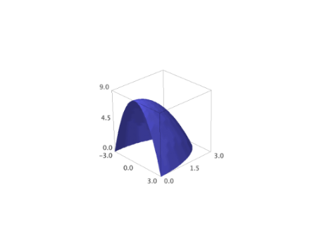 We next graph the function where the radius is constant:
sage: S = Cylindrical('radius', ['azimuth', 'height']) sage: theta, z = var('theta, z') sage: plot3d(3, (theta, 0, 2*pi), (z, -2, 2), transformation=S) Graphics3d Object
>>> from sage.all import * >>> S = Cylindrical('radius', ['azimuth', 'height']) >>> theta, z = var('theta, z') >>> plot3d(Integer(3), (theta, Integer(0), Integer(2)*pi), (z, -Integer(2), Integer(2)), transformation=S) Graphics3d Object
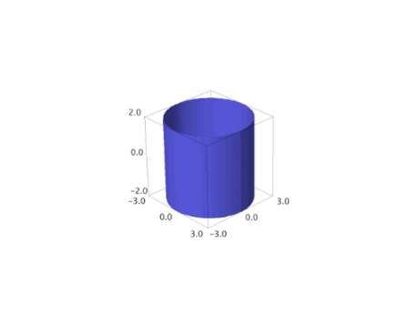 See also
cylindrical_plot3d()for more examples of plotting in cylindrical coordinates.- transform(radius=None, azimuth=None, height=None)[source]¶
A cylindrical coordinates transform.
EXAMPLES:
sage: T = Cylindrical('height', ['azimuth', 'radius']) sage: T.transform(radius=var('r'), azimuth=var('theta'), height=var('z')) (r*cos(theta), r*sin(theta), z)
>>> from sage.all import * >>> T = Cylindrical('height', ['azimuth', 'radius']) >>> T.transform(radius=var('r'), azimuth=var('theta'), height=var('z')) (r*cos(theta), r*sin(theta), z)
- class sage.plot.plot3d.plot3d.Spherical(dep_var, indep_vars)[source]¶
Bases:
_CoordinatesA spherical coordinate system for use with
plot3d(transformation=...)where the position of a point is specified by three numbers:the radial distance (
radius) from the originthe azimuth angle (
azimuth) from the positive \(x\)-axisthe inclination angle (
inclination) from the positive \(z\)-axis
These three variables must be specified in the constructor.
EXAMPLES:
Construct a spherical transformation for a function for the radius in terms of the azimuth and inclination:
sage: T = Spherical('radius', ['azimuth', 'inclination'])
>>> from sage.all import * >>> T = Spherical('radius', ['azimuth', 'inclination'])
If we construct some concrete variables, we can get a transformation in terms of those variables:
sage: r, phi, theta = var('r phi theta') sage: T.transform(radius=r, azimuth=theta, inclination=phi) (r*cos(theta)*sin(phi), r*sin(phi)*sin(theta), r*cos(phi))
>>> from sage.all import * >>> r, phi, theta = var('r phi theta') >>> T.transform(radius=r, azimuth=theta, inclination=phi) (r*cos(theta)*sin(phi), r*sin(phi)*sin(theta), r*cos(phi))
We can plot with this transform. Remember that the dependent variable is the radius, and the independent variables are the azimuth and the inclination (in that order):
sage: plot3d(phi * theta, (theta, 0, pi), (phi, 0, 1), transformation=T) Graphics3d Object
>>> from sage.all import * >>> plot3d(phi * theta, (theta, Integer(0), pi), (phi, Integer(0), Integer(1)), transformation=T) Graphics3d Object
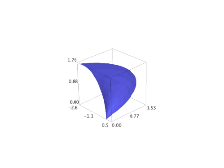 We next graph the function where the inclination angle is constant:
sage: S = Spherical('inclination', ['radius', 'azimuth']) sage: r, theta = var('r,theta') sage: plot3d(3, (r,0,3), (theta, 0, 2*pi), transformation=S) Graphics3d Object
>>> from sage.all import * >>> S = Spherical('inclination', ['radius', 'azimuth']) >>> r, theta = var('r,theta') >>> plot3d(Integer(3), (r,Integer(0),Integer(3)), (theta, Integer(0), Integer(2)*pi), transformation=S) Graphics3d Object
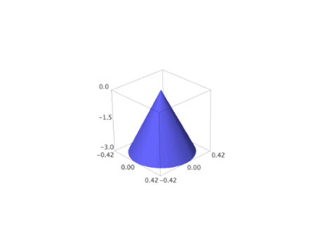 See also
spherical_plot3d()for more examples of plotting in spherical coordinates.- transform(radius=None, azimuth=None, inclination=None)[source]¶
A spherical coordinates transform.
EXAMPLES:
sage: T = Spherical('radius', ['azimuth', 'inclination']) sage: T.transform(radius=var('r'), azimuth=var('theta'), inclination=var('phi')) (r*cos(theta)*sin(phi), r*sin(phi)*sin(theta), r*cos(phi))
>>> from sage.all import * >>> T = Spherical('radius', ['azimuth', 'inclination']) >>> T.transform(radius=var('r'), azimuth=var('theta'), inclination=var('phi')) (r*cos(theta)*sin(phi), r*sin(phi)*sin(theta), r*cos(phi))
- class sage.plot.plot3d.plot3d.SphericalElevation(dep_var, indep_vars)[source]¶
Bases:
_CoordinatesA spherical coordinate system for use with
plot3d(transformation=...)where the position of a point is specified by three numbers:the radial distance (
radius) from the originthe azimuth angle (
azimuth) from the positive \(x\)-axisthe elevation angle (
elevation) from the \(xy\)-plane toward the positive \(z\)-axis
These three variables must be specified in the constructor.
EXAMPLES:
Construct a spherical transformation for the radius in terms of the azimuth and elevation. Then, get a transformation in terms of those variables:
sage: T = SphericalElevation('radius', ['azimuth', 'elevation']) sage: r, theta, phi = var('r theta phi') sage: T.transform(radius=r, azimuth=theta, elevation=phi) (r*cos(phi)*cos(theta), r*cos(phi)*sin(theta), r*sin(phi))
>>> from sage.all import * >>> T = SphericalElevation('radius', ['azimuth', 'elevation']) >>> r, theta, phi = var('r theta phi') >>> T.transform(radius=r, azimuth=theta, elevation=phi) (r*cos(phi)*cos(theta), r*cos(phi)*sin(theta), r*sin(phi))
We can plot with this transform. Remember that the dependent variable is the radius, and the independent variables are the azimuth and the elevation (in that order):
sage: plot3d(phi * theta, (theta, 0, pi), (phi, 0, 1), transformation=T) Graphics3d Object
>>> from sage.all import * >>> plot3d(phi * theta, (theta, Integer(0), pi), (phi, Integer(0), Integer(1)), transformation=T) Graphics3d Object
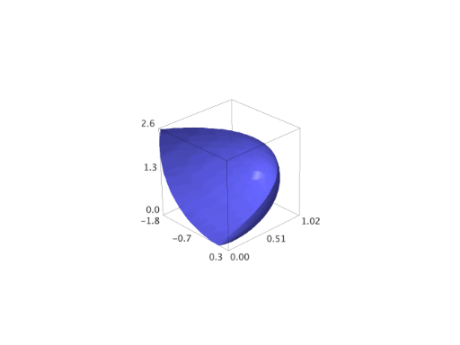 We next graph the function where the elevation angle is constant. This should be compared to the similar example for the
Sphericalcoordinate system:sage: SE = SphericalElevation('elevation', ['radius', 'azimuth']) sage: r, theta = var('r,theta') sage: plot3d(3, (r, 0, 3), (theta, 0, 2*pi), transformation=SE) Graphics3d Object
>>> from sage.all import * >>> SE = SphericalElevation('elevation', ['radius', 'azimuth']) >>> r, theta = var('r,theta') >>> plot3d(Integer(3), (r, Integer(0), Integer(3)), (theta, Integer(0), Integer(2)*pi), transformation=SE) Graphics3d Object
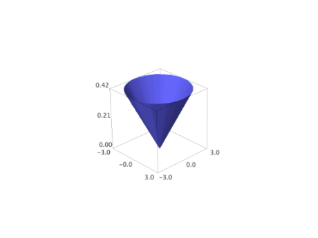 Plot a sin curve wrapped around the equator:
sage: P1 = plot3d((pi/12)*sin(8*theta), (r,0.99,1), (theta, 0, 2*pi), ....: transformation=SE, plot_points=(10,200)) sage: P2 = sphere(center=(0,0,0), size=1, color='red', opacity=0.3) sage: P1 + P2 Graphics3d Object
>>> from sage.all import * >>> P1 = plot3d((pi/Integer(12))*sin(Integer(8)*theta), (r,RealNumber('0.99'),Integer(1)), (theta, Integer(0), Integer(2)*pi), ... transformation=SE, plot_points=(Integer(10),Integer(200))) >>> P2 = sphere(center=(Integer(0),Integer(0),Integer(0)), size=Integer(1), color='red', opacity=RealNumber('0.3')) >>> P1 + P2 Graphics3d Object
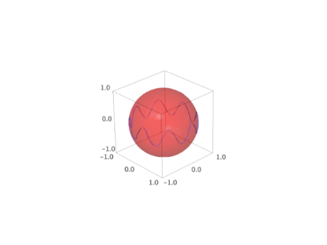 Now we graph several constant elevation functions alongside several constant inclination functions. This example illustrates the difference between the
Sphericalcoordinate system and theSphericalElevationcoordinate system:sage: r, phi, theta = var('r phi theta') sage: SE = SphericalElevation('elevation', ['radius', 'azimuth']) sage: angles = [pi/18, pi/12, pi/6] sage: P1 = [plot3d(a, (r,0,3), (theta, 0, 2*pi), transformation=SE, ....: opacity=0.85, color='blue') ....: for a in angles] sage: S = Spherical('inclination', ['radius', 'azimuth']) sage: P2 = [plot3d(a, (r,0,3), (theta, 0, 2*pi), transformation=S, ....: opacity=0.85, color='red') ....: for a in angles] sage: show(sum(P1+P2), aspect_ratio=1)
>>> from sage.all import * >>> r, phi, theta = var('r phi theta') >>> SE = SphericalElevation('elevation', ['radius', 'azimuth']) >>> angles = [pi/Integer(18), pi/Integer(12), pi/Integer(6)] >>> P1 = [plot3d(a, (r,Integer(0),Integer(3)), (theta, Integer(0), Integer(2)*pi), transformation=SE, ... opacity=RealNumber('0.85'), color='blue') ... for a in angles] >>> S = Spherical('inclination', ['radius', 'azimuth']) >>> P2 = [plot3d(a, (r,Integer(0),Integer(3)), (theta, Integer(0), Integer(2)*pi), transformation=S, ... opacity=RealNumber('0.85'), color='red') ... for a in angles] >>> show(sum(P1+P2), aspect_ratio=Integer(1))
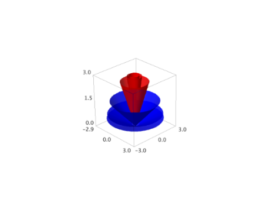 See also
spherical_plot3d()for more examples of plotting in spherical coordinates.- transform(radius=None, azimuth=None, elevation=None)[source]¶
A spherical elevation coordinates transform.
EXAMPLES:
sage: T = SphericalElevation('radius', ['azimuth', 'elevation']) sage: T.transform(radius=var('r'), azimuth=var('theta'), elevation=var('phi')) (r*cos(phi)*cos(theta), r*cos(phi)*sin(theta), r*sin(phi))
>>> from sage.all import * >>> T = SphericalElevation('radius', ['azimuth', 'elevation']) >>> T.transform(radius=var('r'), azimuth=var('theta'), elevation=var('phi')) (r*cos(phi)*cos(theta), r*cos(phi)*sin(theta), r*sin(phi))
- class sage.plot.plot3d.plot3d.TrivialTriangleFactory[source]¶
Bases:
objectClass emulating behavior of
TriangleFactorybut simply returning a list of vertices for both regular and smooth triangles.- smooth_triangle(a, b, c, da, db, dc, color=None)[source]¶
Function emulating behavior of
smooth_triangle()but simply returning a list of vertices.INPUT:
a,b,c– triples (x,y,z) representing corners on a triangle in 3-spaceda,db,dc– ignoredcolor– ignored
OUTPUT: the list
[a,b,c]
- triangle(a, b, c, color=None)[source]¶
Function emulating behavior of
triangle()but simply returning a list of vertices.INPUT:
a,b,c– triples (x,y,z) representing corners on a triangle in 3-spacecolor– ignored
OUTPUT: the list
[a,b,c]
- sage.plot.plot3d.plot3d.axes(scale=1, radius=None, **kwds)[source]¶
Create basic axes in three dimensions. Each axis is a three dimensional arrow object.
INPUT:
scale– (default: 1) the length of the axes (all three will be the same)radius– (default: .01) the radius of the axes as arrows
EXAMPLES:
sage: from sage.plot.plot3d.plot3d import axes sage: S = axes(6, color='black'); S Graphics3d Object
>>> from sage.all import * >>> from sage.plot.plot3d.plot3d import axes >>> S = axes(Integer(6), color='black'); S Graphics3d Object
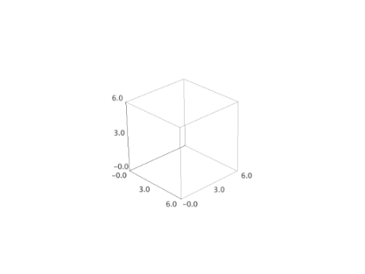 sage: T = axes(2, .5); T Graphics3d Object
>>> from sage.all import * >>> T = axes(Integer(2), RealNumber('.5')); T Graphics3d Object
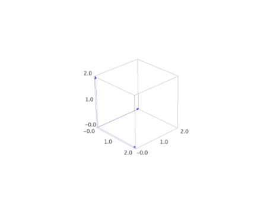
- sage.plot.plot3d.plot3d.cylindrical_plot3d(f, urange, vrange, **kwds)[source]¶
Plots a function in cylindrical coordinates. This function is equivalent to:
sage: r, u, v = var('r,u,v') sage: f = u*v; urange = (u, 0, pi); vrange = (v, 0, pi) sage: T = (r*cos(u), r*sin(u), v, [u, v]) sage: plot3d(f, urange, vrange, transformation=T) Graphics3d Object
>>> from sage.all import * >>> r, u, v = var('r,u,v') >>> f = u*v; urange = (u, Integer(0), pi); vrange = (v, Integer(0), pi) >>> T = (r*cos(u), r*sin(u), v, [u, v]) >>> plot3d(f, urange, vrange, transformation=T) Graphics3d Object

or equivalently:
sage: T = Cylindrical('radius', ['azimuth', 'height']) sage: f=lambda u,v: u*v; urange=(u,0,pi); vrange=(v,0,pi) sage: plot3d(f, urange, vrange, transformation=T) Graphics3d Object
>>> from sage.all import * >>> T = Cylindrical('radius', ['azimuth', 'height']) >>> f=lambda u,v: u*v; urange=(u,Integer(0),pi); vrange=(v,Integer(0),pi) >>> plot3d(f, urange, vrange, transformation=T) Graphics3d Object
INPUT:
f– a symbolic expression or function of two variables, representing the radius from the \(z\)-axisurange– a 3-tuple (u, u_min, u_max), the domain of the azimuth variablevrange– a 3-tuple (v, v_min, v_max), the domain of the elevation (\(z\)) variable
EXAMPLES:
A portion of a cylinder of radius 2:
sage: theta, z = var('theta,z') sage: cylindrical_plot3d(2, (theta, 0, 3*pi/2), (z, -2, 2)) Graphics3d Object
>>> from sage.all import * >>> theta, z = var('theta,z') >>> cylindrical_plot3d(Integer(2), (theta, Integer(0), Integer(3)*pi/Integer(2)), (z, -Integer(2), Integer(2))) Graphics3d Object
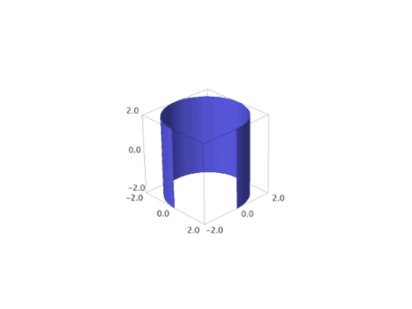 Some random figures:
sage: cylindrical_plot3d(cosh(z), (theta, 0, 2*pi), (z, -2, 2)) Graphics3d Object
>>> from sage.all import * >>> cylindrical_plot3d(cosh(z), (theta, Integer(0), Integer(2)*pi), (z, -Integer(2), Integer(2))) Graphics3d Object
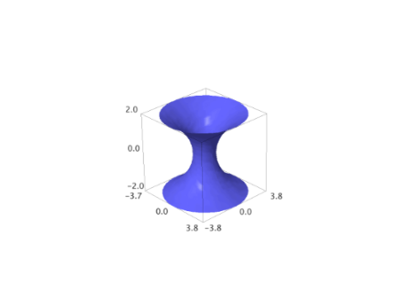 sage: cylindrical_plot3d(e^(-z^2)*(cos(4*theta) + 2) + 1, (theta, 0, 2*pi), (z, -2, 2), plot_points=[80, 80]).show(aspect_ratio=(1, 1, 1))
>>> from sage.all import * >>> cylindrical_plot3d(e**(-z**Integer(2))*(cos(Integer(4)*theta) + Integer(2)) + Integer(1), (theta, Integer(0), Integer(2)*pi), (z, -Integer(2), Integer(2)), plot_points=[Integer(80), Integer(80)]).show(aspect_ratio=(Integer(1), Integer(1), Integer(1)))
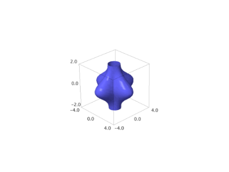
- sage.plot.plot3d.plot3d.plot3d(f, urange, vrange, adaptive=False, transformation=None, **kwds)[source]¶
Plots a function in 3d.
INPUT:
f– a symbolic expression or function of 2 variablesurange– a 2-tuple (u_min, u_max) or a 3-tuple (u, u_min, u_max)vrange– a 2-tuple (v_min, v_max) or a 3-tuple (v, v_min, v_max)adaptive– boolean (default:False); whether to use adaptive refinement to draw the plot (slower, but may look better). This option does NOT work in conjunction with a transformation (see below).mesh– boolean (default:False); whether to display mesh grid linesdots– boolean (default:False); whether to display dots at mesh grid pointsplot_points– (default:'automatic') initial number of sample points in each direction; an integer or a pair of integerstransformation– (default:None) a transformation to apply. May be a 3 or 4-tuple (x_func, y_func, z_func, independent_vars) where the first 3 items indicate a transformation to Cartesian coordinates (from your coordinate system) in terms of u, v, and the function variable fvar (for which the value of f will be substituted). If a 3-tuple is specified, the independent variables are chosen from the range variables. If a 4-tuple is specified, the 4th element is a list of independent variables.transformationmay also be a predefined coordinate system transformation like Spherical or Cylindrical.
Note
meshanddotsare not supported when using the Tachyon raytracer renderer.EXAMPLES: We plot a 3d function defined as a Python function:
sage: plot3d(lambda x, y: x^2 + y^2, (-2,2), (-2,2)) Graphics3d Object
>>> from sage.all import * >>> plot3d(lambda x, y: x**Integer(2) + y**Integer(2), (-Integer(2),Integer(2)), (-Integer(2),Integer(2))) Graphics3d Object
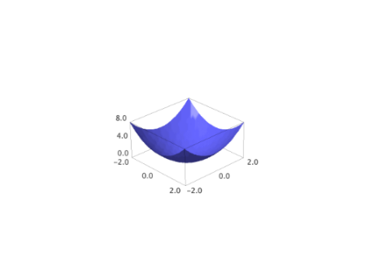 We plot the same 3d function but using adaptive refinement:
sage: plot3d(lambda x, y: x^2 + y^2, (-2,2), (-2,2), adaptive=True) Graphics3d Object
>>> from sage.all import * >>> plot3d(lambda x, y: x**Integer(2) + y**Integer(2), (-Integer(2),Integer(2)), (-Integer(2),Integer(2)), adaptive=True) Graphics3d Object
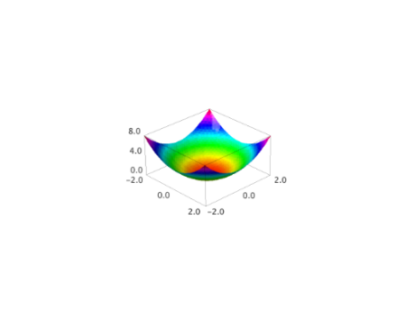 Adaptive refinement but with more points:
sage: plot3d(lambda x, y: x^2 + y^2, (-2,2), (-2,2), adaptive=True, initial_depth=5) Graphics3d Object
>>> from sage.all import * >>> plot3d(lambda x, y: x**Integer(2) + y**Integer(2), (-Integer(2),Integer(2)), (-Integer(2),Integer(2)), adaptive=True, initial_depth=Integer(5)) Graphics3d Object
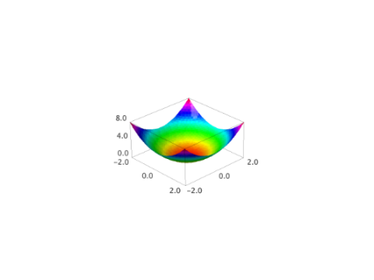 We plot some 3d symbolic functions:
sage: var('x,y') (x, y) sage: plot3d(x^2 + y^2, (x,-2,2), (y,-2,2)) Graphics3d Object
>>> from sage.all import * >>> var('x,y') (x, y) >>> plot3d(x**Integer(2) + y**Integer(2), (x,-Integer(2),Integer(2)), (y,-Integer(2),Integer(2))) Graphics3d Object
sage: plot3d(sin(x*y), (x, -pi, pi), (y, -pi, pi)) Graphics3d Object
>>> from sage.all import * >>> plot3d(sin(x*y), (x, -pi, pi), (y, -pi, pi)) Graphics3d Object
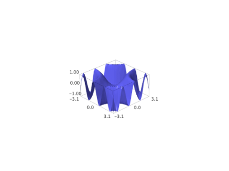 We give a plot with extra sample points:
sage: var('x,y') (x, y) sage: plot3d(sin(x^2 + y^2), (x,-5,5), (y,-5,5), plot_points=200) Graphics3d Object
>>> from sage.all import * >>> var('x,y') (x, y) >>> plot3d(sin(x**Integer(2) + y**Integer(2)), (x,-Integer(5),Integer(5)), (y,-Integer(5),Integer(5)), plot_points=Integer(200)) Graphics3d Object
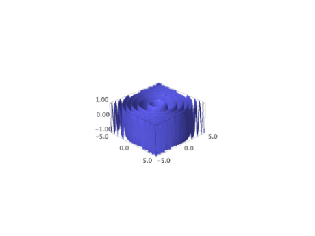 sage: plot3d(sin(x^2 + y^2), (x, -5, 5), (y, -5, 5), plot_points=[10, 100]) Graphics3d Object
>>> from sage.all import * >>> plot3d(sin(x**Integer(2) + y**Integer(2)), (x, -Integer(5), Integer(5)), (y, -Integer(5), Integer(5)), plot_points=[Integer(10), Integer(100)]) Graphics3d Object
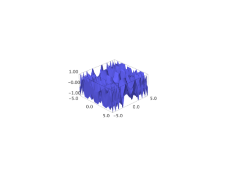 A 3d plot with a mesh:
sage: var('x,y') (x, y) sage: plot3d(sin(x - y)*y*cos(x), (x, -3, 3), (y, -3, 3), mesh=True) Graphics3d Object
>>> from sage.all import * >>> var('x,y') (x, y) >>> plot3d(sin(x - y)*y*cos(x), (x, -Integer(3), Integer(3)), (y, -Integer(3), Integer(3)), mesh=True) Graphics3d Object
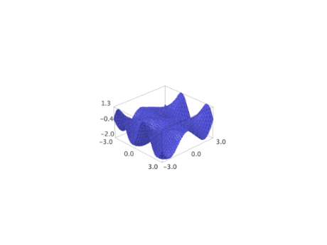 The same with thicker mesh lines (not supported in all viewers):
sage: var('x,y') (x, y) sage: plot3d(sin(x - y)*y*cos(x), (x, -3, 3), (y, -3, 3), mesh=True, ....: thickness=2, viewer='threejs') Graphics3d Object
>>> from sage.all import * >>> var('x,y') (x, y) >>> plot3d(sin(x - y)*y*cos(x), (x, -Integer(3), Integer(3)), (y, -Integer(3), Integer(3)), mesh=True, ... thickness=Integer(2), viewer='threejs') Graphics3d Object
Two wobby translucent planes:
sage: x,y = var('x,y') sage: P = plot3d(x + y + sin(x*y), (x, -10, 10), (y, -10, 10), ....: opacity=0.87, color='blue') sage: Q = plot3d(x - 2*y - cos(x*y),(x, -10, 10), (y, -10, 10), ....: opacity=0.3, color='red') sage: P + Q Graphics3d Object
>>> from sage.all import * >>> x,y = var('x,y') >>> P = plot3d(x + y + sin(x*y), (x, -Integer(10), Integer(10)), (y, -Integer(10), Integer(10)), ... opacity=RealNumber('0.87'), color='blue') >>> Q = plot3d(x - Integer(2)*y - cos(x*y),(x, -Integer(10), Integer(10)), (y, -Integer(10), Integer(10)), ... opacity=RealNumber('0.3'), color='red') >>> P + Q Graphics3d Object
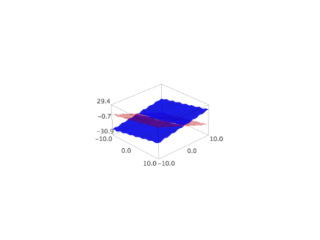 We draw two parametric surfaces and a transparent plane:
sage: L = plot3d(lambda x,y: 0, (-5,5), (-5,5), color='lightblue', opacity=0.8) sage: P = plot3d(lambda x,y: 4 - x^3 - y^2, (-2,2), (-2,2), color='green') sage: Q = plot3d(lambda x,y: x^3 + y^2 - 4, (-2,2), (-2,2), color='orange') sage: L + P + Q Graphics3d Object
>>> from sage.all import * >>> L = plot3d(lambda x,y: Integer(0), (-Integer(5),Integer(5)), (-Integer(5),Integer(5)), color='lightblue', opacity=RealNumber('0.8')) >>> P = plot3d(lambda x,y: Integer(4) - x**Integer(3) - y**Integer(2), (-Integer(2),Integer(2)), (-Integer(2),Integer(2)), color='green') >>> Q = plot3d(lambda x,y: x**Integer(3) + y**Integer(2) - Integer(4), (-Integer(2),Integer(2)), (-Integer(2),Integer(2)), color='orange') >>> L + P + Q Graphics3d Object
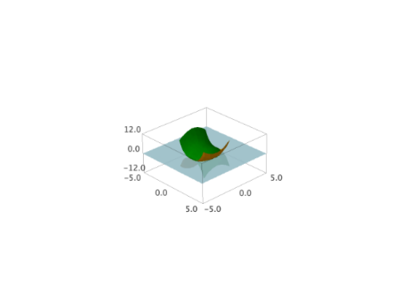 We draw the “Sinus” function (water ripple-like surface):
sage: x, y = var('x y') sage: plot3d(sin(pi*(x^2 + y^2))/2, (x, -1, 1), (y, -1, 1)) Graphics3d Object
>>> from sage.all import * >>> x, y = var('x y') >>> plot3d(sin(pi*(x**Integer(2) + y**Integer(2)))/Integer(2), (x, -Integer(1), Integer(1)), (y, -Integer(1), Integer(1))) Graphics3d Object
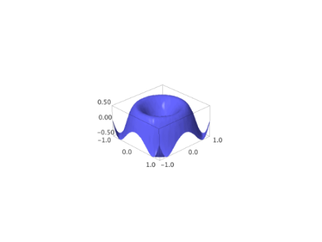 Hill and valley (flat surface with a bump and a dent):
sage: x, y = var('x y') sage: plot3d(4*x*exp(-x^2 - y^2), (x, -2, 2), (y, -2, 2)) Graphics3d Object
>>> from sage.all import * >>> x, y = var('x y') >>> plot3d(Integer(4)*x*exp(-x**Integer(2) - y**Integer(2)), (x, -Integer(2), Integer(2)), (y, -Integer(2), Integer(2))) Graphics3d Object
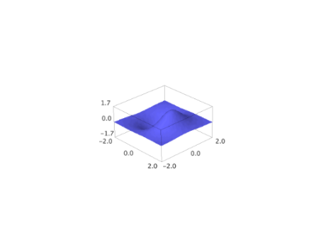 An example of a transformation:
sage: r, phi, z = var('r phi z') sage: trans = (r*cos(phi), r*sin(phi), z) sage: plot3d(cos(r), (r, 0, 17*pi/2), (phi, 0, 2*pi), transformation=trans, opacity=0.87).show(aspect_ratio=(1,1,2), frame=False)
>>> from sage.all import * >>> r, phi, z = var('r phi z') >>> trans = (r*cos(phi), r*sin(phi), z) >>> plot3d(cos(r), (r, Integer(0), Integer(17)*pi/Integer(2)), (phi, Integer(0), Integer(2)*pi), transformation=trans, opacity=RealNumber('0.87')).show(aspect_ratio=(Integer(1),Integer(1),Integer(2)), frame=False)
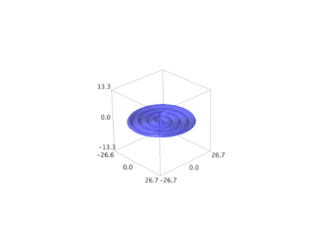 An example of a transformation with symbolic vector:
sage: cylindrical(r, theta, z) = [r*cos(theta), r*sin(theta), z] sage: plot3d(3, (theta, 0, pi/2), (z, 0, pi/2), transformation=cylindrical) Graphics3d Object
>>> from sage.all import * >>> __tmp__=var("r,theta,z"); cylindrical = symbolic_expression([r*cos(theta), r*sin(theta), z]).function(r,theta,z) >>> plot3d(Integer(3), (theta, Integer(0), pi/Integer(2)), (z, Integer(0), pi/Integer(2)), transformation=cylindrical) Graphics3d Object
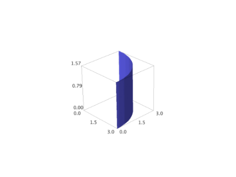 Many more examples of transformations:
sage: u, v, w = var('u v w') sage: rectangular=(u,v,w) sage: spherical=(w*cos(u)*sin(v),w*sin(u)*sin(v),w*cos(v)) sage: cylindric_radial=(w*cos(u),w*sin(u),v) sage: cylindric_axial=(v*cos(u),v*sin(u),w) sage: parabolic_cylindrical=(w*v,(v^2-w^2)/2,u)
>>> from sage.all import * >>> u, v, w = var('u v w') >>> rectangular=(u,v,w) >>> spherical=(w*cos(u)*sin(v),w*sin(u)*sin(v),w*cos(v)) >>> cylindric_radial=(w*cos(u),w*sin(u),v) >>> cylindric_axial=(v*cos(u),v*sin(u),w) >>> parabolic_cylindrical=(w*v,(v**Integer(2)-w**Integer(2))/Integer(2),u)
Plot a constant function of each of these to get an idea of what it does:
sage: A = plot3d(2,(u,-pi,pi),(v,0,pi),transformation=rectangular,plot_points=[100,100]) sage: B = plot3d(2,(u,-pi,pi),(v,0,pi),transformation=spherical,plot_points=[100,100]) sage: C = plot3d(2,(u,-pi,pi),(v,0,pi),transformation=cylindric_radial,plot_points=[100,100]) sage: D = plot3d(2,(u,-pi,pi),(v,0,pi),transformation=cylindric_axial,plot_points=[100,100]) sage: E = plot3d(2,(u,-pi,pi),(v,-pi,pi),transformation=parabolic_cylindrical,plot_points=[100,100]) sage: @interact ....: def _(which_plot=[A,B,C,D,E]): ....: show(which_plot) ...Interactive function <function _ at ...> with 1 widget which_plot: Dropdown(description='which_plot', options=(Graphics3d Object, Graphics3d Object, Graphics3d Object, Graphics3d Object, Graphics3d Object), value=Graphics3d Object)
>>> from sage.all import * >>> A = plot3d(Integer(2),(u,-pi,pi),(v,Integer(0),pi),transformation=rectangular,plot_points=[Integer(100),Integer(100)]) >>> B = plot3d(Integer(2),(u,-pi,pi),(v,Integer(0),pi),transformation=spherical,plot_points=[Integer(100),Integer(100)]) >>> C = plot3d(Integer(2),(u,-pi,pi),(v,Integer(0),pi),transformation=cylindric_radial,plot_points=[Integer(100),Integer(100)]) >>> D = plot3d(Integer(2),(u,-pi,pi),(v,Integer(0),pi),transformation=cylindric_axial,plot_points=[Integer(100),Integer(100)]) >>> E = plot3d(Integer(2),(u,-pi,pi),(v,-pi,pi),transformation=parabolic_cylindrical,plot_points=[Integer(100),Integer(100)]) >>> @interact ... def _(which_plot=[A,B,C,D,E]): ... show(which_plot) ...Interactive function <function _ at ...> with 1 widget which_plot: Dropdown(description='which_plot', options=(Graphics3d Object, Graphics3d Object, Graphics3d Object, Graphics3d Object, Graphics3d Object), value=Graphics3d Object)
Now plot a function:
sage: g=3+sin(4*u)/2+cos(4*v)/2 sage: F = plot3d(g,(u,-pi,pi),(v,0,pi),transformation=rectangular,plot_points=[100,100]) sage: G = plot3d(g,(u,-pi,pi),(v,0,pi),transformation=spherical,plot_points=[100,100]) sage: H = plot3d(g,(u,-pi,pi),(v,0,pi),transformation=cylindric_radial,plot_points=[100,100]) sage: I = plot3d(g,(u,-pi,pi),(v,0,pi),transformation=cylindric_axial,plot_points=[100,100]) sage: J = plot3d(g,(u,-pi,pi),(v,0,pi),transformation=parabolic_cylindrical,plot_points=[100,100]) sage: @interact ....: def _(which_plot=[F, G, H, I, J]): ....: show(which_plot) ...Interactive function <function _ at ...> with 1 widget which_plot: Dropdown(description='which_plot', options=(Graphics3d Object, Graphics3d Object, Graphics3d Object, Graphics3d Object, Graphics3d Object), value=Graphics3d Object)
>>> from sage.all import * >>> g=Integer(3)+sin(Integer(4)*u)/Integer(2)+cos(Integer(4)*v)/Integer(2) >>> F = plot3d(g,(u,-pi,pi),(v,Integer(0),pi),transformation=rectangular,plot_points=[Integer(100),Integer(100)]) >>> G = plot3d(g,(u,-pi,pi),(v,Integer(0),pi),transformation=spherical,plot_points=[Integer(100),Integer(100)]) >>> H = plot3d(g,(u,-pi,pi),(v,Integer(0),pi),transformation=cylindric_radial,plot_points=[Integer(100),Integer(100)]) >>> I = plot3d(g,(u,-pi,pi),(v,Integer(0),pi),transformation=cylindric_axial,plot_points=[Integer(100),Integer(100)]) >>> J = plot3d(g,(u,-pi,pi),(v,Integer(0),pi),transformation=parabolic_cylindrical,plot_points=[Integer(100),Integer(100)]) >>> @interact ... def _(which_plot=[F, G, H, I, J]): ... show(which_plot) ...Interactive function <function _ at ...> with 1 widget which_plot: Dropdown(description='which_plot', options=(Graphics3d Object, Graphics3d Object, Graphics3d Object, Graphics3d Object, Graphics3d Object), value=Graphics3d Object)
- sage.plot.plot3d.plot3d.plot3d_adaptive(f, x_range, y_range, color='automatic', grad_f=None, max_bend=0.5, max_depth=5, initial_depth=4, num_colors=128, **kwds)[source]¶
Adaptive 3d plotting of a function of two variables.
This is used internally by the plot3d command when the option
adaptive=Trueis given.INPUT:
f– a symbolic function or a Python function of 3 variablesx_range– x range of values: 2-tuple (xmin, xmax) or 3-tuple (x,xmin,xmax)y_range– y range of values: 2-tuple (ymin, ymax) or 3-tuple (y,ymin,ymax)grad_f– gradient of f as a Python functioncolor– “automatic”; a rainbow of num_colors colorsnum_colors– (default: 128) number of colors to use with default colormax_bend– (default: 0.5)max_depth– (default: 5)initial_depth– (default: 4)**kwds– standard graphics parameters
EXAMPLES:
We plot \(\sin(xy)\):
sage: from sage.plot.plot3d.plot3d import plot3d_adaptive sage: x, y = var('x,y') sage: plot3d_adaptive(sin(x*y), (x, -pi, pi), (y, -pi, pi), initial_depth=5) Graphics3d Object
>>> from sage.all import * >>> from sage.plot.plot3d.plot3d import plot3d_adaptive >>> x, y = var('x,y') >>> plot3d_adaptive(sin(x*y), (x, -pi, pi), (y, -pi, pi), initial_depth=Integer(5)) Graphics3d Object
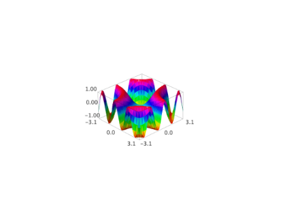
- sage.plot.plot3d.plot3d.spherical_plot3d(f, urange, vrange, **kwds)[source]¶
Plots a function in spherical coordinates. This function is equivalent to:
sage: r,u,v=var('r,u,v') sage: f=u*v; urange=(u,0,pi); vrange=(v,0,pi) sage: T = (r*cos(u)*sin(v), r*sin(u)*sin(v), r*cos(v), [u,v]) sage: plot3d(f, urange, vrange, transformation=T) Graphics3d Object
>>> from sage.all import * >>> r,u,v=var('r,u,v') >>> f=u*v; urange=(u,Integer(0),pi); vrange=(v,Integer(0),pi) >>> T = (r*cos(u)*sin(v), r*sin(u)*sin(v), r*cos(v), [u,v]) >>> plot3d(f, urange, vrange, transformation=T) Graphics3d Object
or equivalently:
sage: T = Spherical('radius', ['azimuth', 'inclination']) sage: f=lambda u,v: u*v; urange=(u,0,pi); vrange=(v,0,pi) sage: plot3d(f, urange, vrange, transformation=T) Graphics3d Object
>>> from sage.all import * >>> T = Spherical('radius', ['azimuth', 'inclination']) >>> f=lambda u,v: u*v; urange=(u,Integer(0),pi); vrange=(v,Integer(0),pi) >>> plot3d(f, urange, vrange, transformation=T) Graphics3d Object
INPUT:
f– a symbolic expression or function of two variablesurange– a 3-tuple (u, u_min, u_max), the domain of the azimuth variablevrange– a 3-tuple (v, v_min, v_max), the domain of the inclination variable
EXAMPLES:
A sphere of radius 2:
sage: x,y = var('x,y') sage: spherical_plot3d(2, (x, 0, 2*pi), (y, 0, pi)) Graphics3d Object
>>> from sage.all import * >>> x,y = var('x,y') >>> spherical_plot3d(Integer(2), (x, Integer(0), Integer(2)*pi), (y, Integer(0), pi)) Graphics3d Object
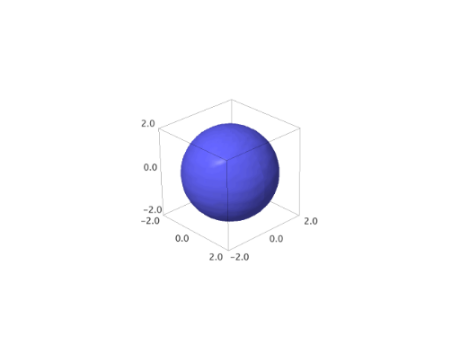 The real and imaginary parts of a spherical harmonic with \(l=2\) and \(m=1\):
sage: phi, theta = var('phi, theta') sage: Y = spherical_harmonic(2, 1, theta, phi) sage: rea = spherical_plot3d(abs(real(Y)), (phi, 0, 2*pi), (theta, 0, pi), color='blue', opacity=0.6) sage: ima = spherical_plot3d(abs(imag(Y)), (phi, 0, 2*pi), (theta, 0, pi), color='red', opacity=0.6) sage: (rea + ima).show(aspect_ratio=1) # long time (4s on sage.math, 2011)
>>> from sage.all import * >>> phi, theta = var('phi, theta') >>> Y = spherical_harmonic(Integer(2), Integer(1), theta, phi) >>> rea = spherical_plot3d(abs(real(Y)), (phi, Integer(0), Integer(2)*pi), (theta, Integer(0), pi), color='blue', opacity=RealNumber('0.6')) >>> ima = spherical_plot3d(abs(imag(Y)), (phi, Integer(0), Integer(2)*pi), (theta, Integer(0), pi), color='red', opacity=RealNumber('0.6')) >>> (rea + ima).show(aspect_ratio=Integer(1)) # long time (4s on sage.math, 2011)
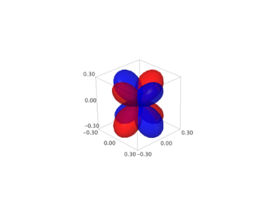 A drop of water:
sage: x,y = var('x,y') sage: spherical_plot3d(e^-y, (x, 0, 2*pi), (y, 0, pi), opacity=0.5).show(frame=False)
>>> from sage.all import * >>> x,y = var('x,y') >>> spherical_plot3d(e**-y, (x, Integer(0), Integer(2)*pi), (y, Integer(0), pi), opacity=RealNumber('0.5')).show(frame=False)

An object similar to a heart:
sage: x,y = var('x,y') sage: spherical_plot3d((2 + cos(2*x))*(y + 1), (x, 0, 2*pi), (y, 0, pi), rgbcolor=(1, .1, .1)) Graphics3d Object
>>> from sage.all import * >>> x,y = var('x,y') >>> spherical_plot3d((Integer(2) + cos(Integer(2)*x))*(y + Integer(1)), (x, Integer(0), Integer(2)*pi), (y, Integer(0), pi), rgbcolor=(Integer(1), RealNumber('.1'), RealNumber('.1'))) Graphics3d Object
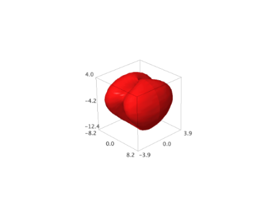 Some random figures:
sage: x,y = var('x,y') sage: spherical_plot3d(1 + sin(5*x)/5, (x, 0, 2*pi), (y, 0, pi), rgbcolor=(1, 0.5, 0), plot_points=(80, 80), opacity=0.7) Graphics3d Object
>>> from sage.all import * >>> x,y = var('x,y') >>> spherical_plot3d(Integer(1) + sin(Integer(5)*x)/Integer(5), (x, Integer(0), Integer(2)*pi), (y, Integer(0), pi), rgbcolor=(Integer(1), RealNumber('0.5'), Integer(0)), plot_points=(Integer(80), Integer(80)), opacity=RealNumber('0.7')) Graphics3d Object
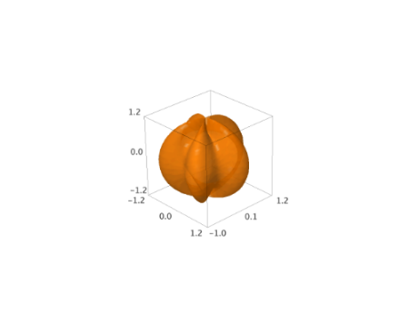 sage: x, y = var('x,y') sage: spherical_plot3d(1 + 2*cos(2*y), (x, 0, 3*pi/2), (y, 0, pi)).show(aspect_ratio=(1, 1, 1))
>>> from sage.all import * >>> x, y = var('x,y') >>> spherical_plot3d(Integer(1) + Integer(2)*cos(Integer(2)*y), (x, Integer(0), Integer(3)*pi/Integer(2)), (y, Integer(0), pi)).show(aspect_ratio=(Integer(1), Integer(1), Integer(1)))
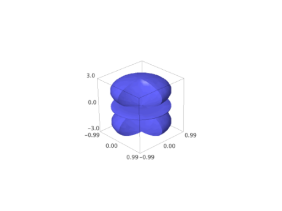